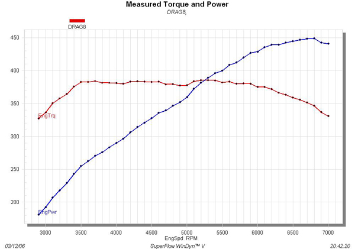

Facts and Info
In 2006, TRM acquired a dragster and a trailer from New Jersey. In 2008 the dragster was sold because of the high cost of licensing drivers. Because it was sold long before any of our current members were on the team, we have limited information on it.
Drive Train Info
This info was listed on an old TRM website from 2006:
- 5.7L (350 c.i) Chevy small block - bored 0.030” to 355 c.i.
- Brodix Aluminum Heads
- Crane Cams Roller Camshaft
- Edelbrock 850cfm Carburetor
- Powerglide Transmission with transbrake and 4500 rpm converter
- Mark Williams Chassisworks 9” Rear-End
- Hoosier Drag Slicks
- MSD Ignition Electronics

"graph of the best run" - 2006 TRM Website